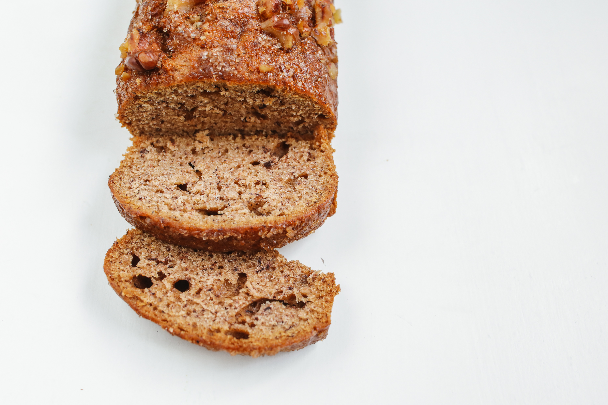

Banana Bread

Description
This recipe comes from Simply Recipes.
I haven't attempted it yet, but it sure looks yummy! It also has lots of good reviews.
My grandma has made banana bread for me for as long as I can remember.
It's one of my favorite deserts (yes, I call it a desert, even though it's called bread!).
Hopefully, this recipe will make a loaf half as good as my grandma's.
Ingredients
- 2 to 3 over-ripe bananas, mashed
- 1/3 cup unsalted butter, melted
- 1/2 teaspoon baking soda
- 1 pinch salt
- 3/4 cup sugar
- 1 large egg, beaten
- 1 teaspoon vanilla extract
- 1 1/2 cups all-purpose flour
Steps
- Preheat the oven to 350°F and butter an 8 x 4-inch loaf pan.
- In a mixing bowl, mash the bananas with a fork until smooth. Stir in the melted butter.
- Mix in the remaining ingredients until combined.
- Pour into the prepared loaf pan and bake for 55 to 65 minutes until baked.
You may need to add a foil tent if the exterior is completedly baked but the interior is still wet.
- Remove from the oven and let cool for a few minutes. Serve.